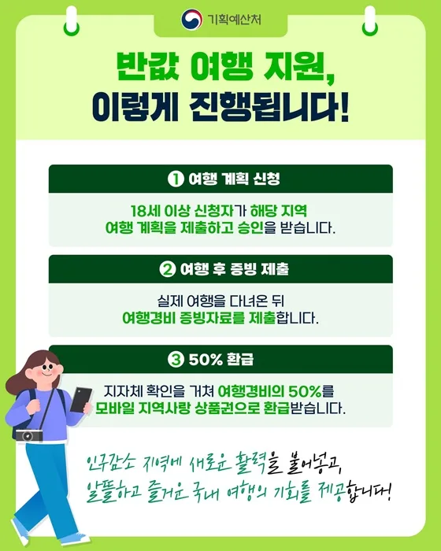
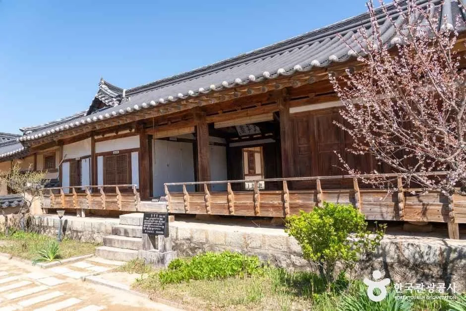
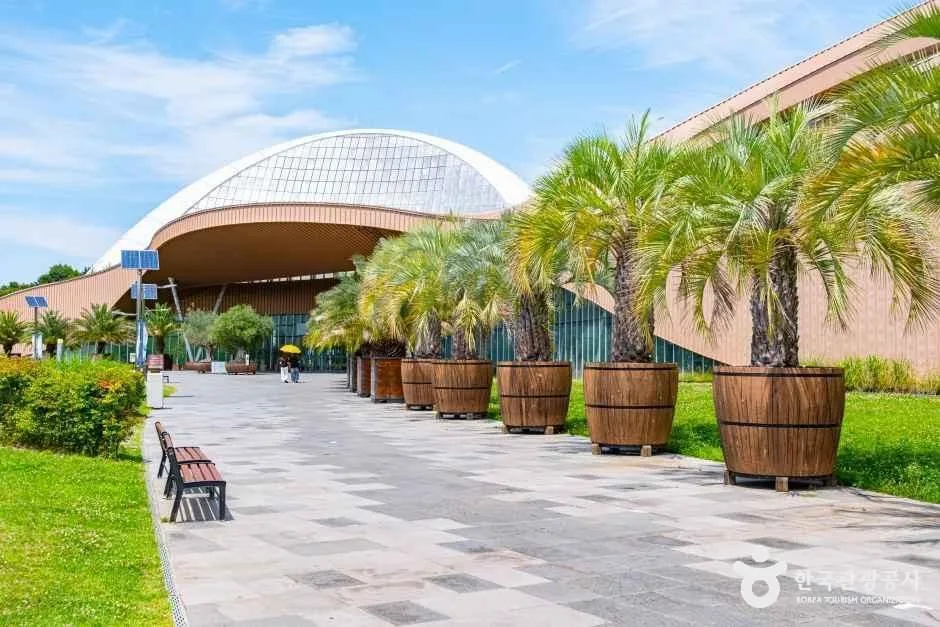
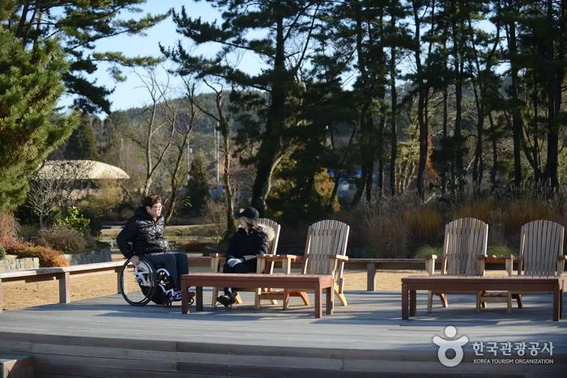
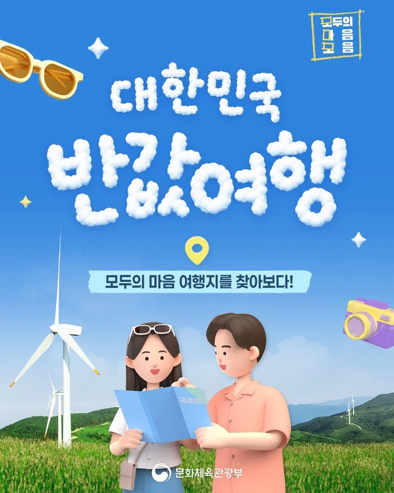
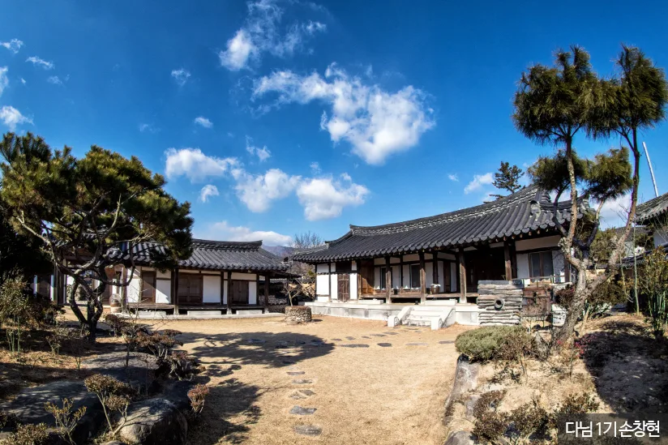
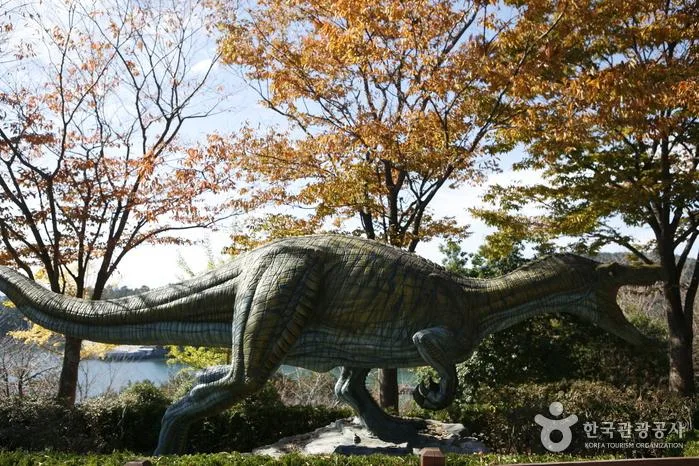
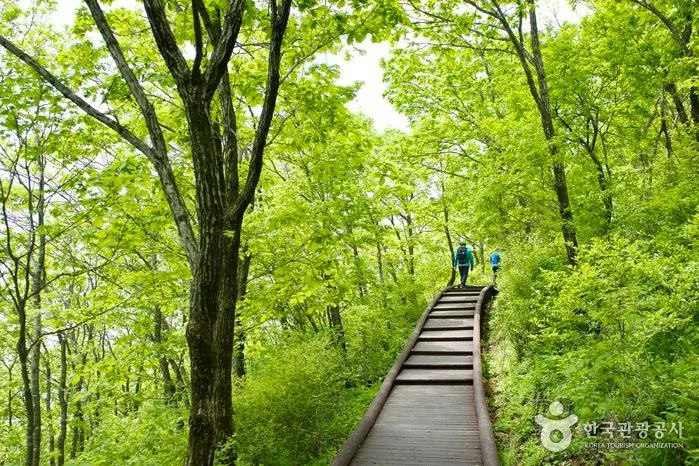
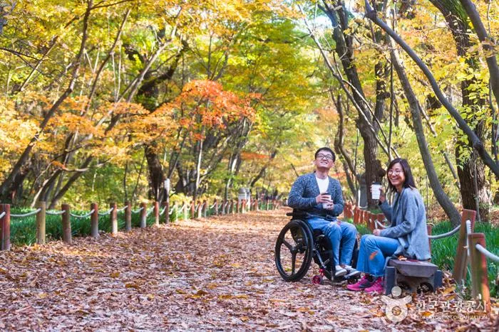

▲ 경남 산청 남사예담촌. 산청군은 이번 하반기 반값여행 추가 지역 9곳에 포함됐다
"20만원 쓰면 14만원을 돌려준다"는 말은 과장이 아닙니다. 다만 조건이 붙습니다. 그 조건에 해당하지 않으면 같은 20만원을 써도 돌려받는 돈은 10만원입니다.
문화체육관광부와 한국관광공사가 운영하는 지역사랑 휴가지원사업, 이른바 대한민국 반값여행에 하반기 9개 지역이 추가됐습니다. 8월 말부터 지역별로 순차 접수가 시작됩니다.
1. 14만원이 나오는 계산
기본 환급률은 50%입니다. 숙박, 식사, 체험 등 여행지에서 쓴 돈의 절반을 돌려받습니다. 1인 기준 한도는 10만원이므로, 20만원을 쓰면 10만원이 나옵니다.
여기서 청년은 다릅니다. 청년기본법상 청년, 즉 19~34세에게는 환급률이 20%p 상향돼 70%가 적용됩니다. 한도도 14만원으로 올라갑니다. 20만원의 70%가 정확히 14만원이므로, 기사 제목의 계산은 청년 1인을 전제로 한 숫자입니다.

▲ 반값여행 지원 절차. 여행 계획 신청 → 여행 후 증빙 제출 → 50% 환급 순으로 진행된다 ⓒ 기획예산처
| 구분 | 환급률 | 1회 한도 |
|---|---|---|
| 일반 1인 | 50% | 10만원 |
| 청년 1인(19~34세) | 70% | 14만원 |
| 2인 이상 | 50% | 20만원 |
| 가족(5인까지) | 50% | 50만원 |
주의할 점은 지급 형태입니다. 환급금은 계좌로 들어오는 현금이 아니라 모바일 지역사랑상품권으로 지급됩니다. 제로페이나 Chak 같은 지역화폐 플랫폼을 통해 받게 되고, 사용처도 해당 지역 가맹점으로 제한됩니다. 여행비를 아끼는 제도라기보다, 그 지역에서 한 번 더 쓰게 만드는 구조에 가깝습니다.
2. 이번에 추가된 9곳
상반기에는 16개 지역이 참여했습니다. 하반기에 아래 9곳이 새로 들어왔습니다. 공통점은 모두 인구감소지역이라는 점입니다. 이 사업 자체가 인구감소지역으로 관광객을 유입시키는 것을 목표로 설계됐기 때문입니다.
| 권역 | 지역 |
|---|---|
| 강원 | 화천군 |
| 충남 | 서천군 · 태안군 |
| 전남 | 장흥군 |
| 경북 | 안동시 · 영천시 |
| 경남 | 고성군 · 산청군 · 함양군 |

▲ 경북 안동 하회마을. 9곳 중 가장 인지도가 높은 목적지에 속한다 ⓒ 대한민국 구석구석(한국관광공사)
안동은 이 목록에서 이질적입니다. 하회마을이라는 유네스코 세계유산을 가진, 이미 관광 수요가 있는 도시이기 때문입니다. 반대로 화천·함양·장흥처럼 상대적으로 덜 알려진 지역이 함께 묶였습니다. 인지도가 높은 곳은 예산이 빨리 소진될 가능성이 큽니다.

▲ 충남 서천 국립생태원. 실내 시설이라 날씨 영향을 덜 받는다 ⓒ 대한민국 구석구석(한국관광공사)

▲ 충남 태안 해안. 수도권에서 접근성이 좋아 경쟁이 치열할 것으로 보이는 지역이다 ⓒ 대한민국 구석구석(한국관광공사)
3. 신청은 반드시 출발 전에
이 제도에서 가장 많이 놓치는 지점입니다. 여행을 다녀온 뒤 영수증을 모아 신청하는 방식이 아닙니다. 출발 전에 여행 계획을 제출하고 승인을 받아야 합니다.
절차는 세 단계입니다. ① 만 18세 이상 신청자가 해당 지역 여행 계획을 제출하고 승인을 받습니다. ② 실제로 여행을 다녀온 뒤 여행경비 증빙자료를 제출합니다. ③ 지자체 확인을 거쳐 모바일 지역사랑상품권으로 환급받습니다.
📍 신청은 어디서 하나
접수는 지역별 지자체 웹사이트에서 각각 진행됩니다. 전국 통합 창구가 따로 있는 것이 아니라 지역마다 페이지가 다릅니다. 참여 지역과 접수 현황은 대한민국 구석구석 반값여행 페이지에 정리돼 있습니다.
대한민국 반값여행 페이지에서 지역별 접수 현황 확인

▲ 대한민국 반값여행 안내. 인구감소지역 여행 활성화를 목적으로 설계된 사업이다 ⓒ 문화체육관광부
접수 시점도 지역마다 다릅니다. 9개 지역이 동시에 열리지 않고 8월 말부터 순차적으로 시작됩니다. 가려는 지역이 아직 "준비 중"이라면 접수 개시일을 확인하고 대기해야 합니다.
4. 놓치기 쉬운 조건들
거주지와 인접 지역은 신청할 수 없습니다. 이 사업은 외지에서 오는 관광객을 대상으로 하기 때문입니다. 예를 들어 경남에 사는 사람이 경남 산청을 신청하는 식의 구성은 막혀 있습니다. 인접 지역 판정 기준은 지역마다 공고에 명시됩니다.

▲ 경남 함양의 고택. 함양은 이번에 새로 참여한 경남 3개 군 중 하나다 ⓒ 대한민국 구석구석(한국관광공사)
지정 관광지 방문이 의무인 지역이 있습니다. 단순히 그 지역에서 돈을 썼다는 사실만으로는 부족하고, 지자체가 지정한 관광지를 실제로 방문했다는 증빙을 요구하는 경우가 있습니다. 계획서를 낼 때 이 조건을 확인해야 합니다.

▲ 경남 고성 상족암군립공원 일대. 공룡 발자국 화석지로 알려진 곳이다 ⓒ 대한민국 구석구석(한국관광공사)
예산이 소진되면 조기 마감됩니다. 선착순 구조입니다. 지역별로 배정된 환급 예산이 정해져 있고, 다 쓰면 공고 기간이 남아 있어도 접수가 닫힙니다. 인지도가 높은 지역일수록 이 시점이 빨리 옵니다.
| 항목 | 내용 |
|---|---|
| 신청 시점 | 출발 전 계획 제출 및 승인 — 사후 신청 불가 |
| 거주지 조건 | 거주지 및 인접 지역은 신청 불가 |
| 방문 조건 | 지역에 따라 지정 관광지 방문 의무 |
| 마감 | 예산 소진 시 조기 종료 — 선착순 |
5. 상반기 성적표
이 사업이 하반기로 이어진 근거는 상반기 실적입니다. 문화체육관광부가 상반기 16개 지역을 분석한 결과, 52억원의 환급 예산이 투입돼 최소 162억원의 지역 내 소비를 만들어낸 것으로 집계됐습니다. 환급액 대비 3.1배입니다.

▲ 경북 영천 보현산 일대. 정상부 천문대까지 차로 접근할 수 있는 구간이 있다 ⓒ 대한민국 구석구석(한국관광공사)
구조를 보면 이 배수가 나오는 이유가 보입니다. 환급이 현금이 아니라 그 지역에서만 쓸 수 있는 상품권으로 나가기 때문에, 돌려받은 돈이 다시 같은 지역에서 소비됩니다. 여행자 입장에서는 "이미 받은 돈을 여기서 써야 한다"는 상황이 되고, 지역 입장에서는 한 번의 방문에서 두 번의 소비가 발생합니다.
6. 차로 간다면 어떻게 묶을까
9곳은 권역별로 인접해 있습니다. 경남 3곳(고성·산청·함양)과 경북 2곳(안동·영천), 충남 2곳(서천·태안)이 각각 묶입니다. 다만 환급은 지역별로 별도 신청이므로, 한 번의 여행에서 두 지역을 도는 것과 두 지역 각각에서 환급을 받는 것은 다른 문제입니다.

▲ 산청·함양 일대의 가을 산책로. 두 지역은 지리산 자락을 사이에 두고 붙어 있다 ⓒ 대한민국 구석구석(한국관광공사)
가을 시즌을 감안하면 권역별 성격이 갈립니다. 산청·함양은 지리산 자락이라 단풍 시기가 빠르고, 서천·태안은 서해안이라 낙조와 갯벌 쪽입니다. 안동·영천은 내륙 문화유산 중심이고, 고성은 해안 지형과 공룡 화석지가 묶입니다. 화천은 산간이라 접근 시간이 가장 길게 나옵니다.
정리하면 이렇습니다. 환급률 70%는 청년에게만 적용되고, 신청은 출발 전에 해야 하며, 돌려받는 돈은 그 지역에서만 쓸 수 있는 상품권입니다. 이 세 가지를 알고 계획을 짜면 실제로 여행비 부담이 절반 아래로 떨어집니다. 반대로 다녀온 뒤에 알게 되면 아무것도 받을 수 없습니다.